As India accelerates toward its ambitious renewable energy targets — with the Central Electricity Authority (CEA) estimating a requirement of approximately 336 GWh of energy storage capacity by 2029–30 — Battery Energy Storage Systems (BESS) are rapidly evolving from passive storage assets into active grid participants. Central to this transformation is the Energy Management System (EMS), the intelligent "brain" of every BESS installation. Among the EMS's most critical advanced functions are Automatic Generation Control (AGC) and Automatic Voltage Control (AVC) — two complementary dispatch capabilities that enable BESS to actively support grid stability at a system level.
This article provides a detailed technical explanation of AGC and AVC within the EMS architecture of a BESS, covering their objectives, control mechanisms, operating modes, performance benchmarks, and their growing importance in the Indian grid context.
The EMS: Command Center of a BESS
Before diving into AGC and AVC, it is important to understand where these functions sit within the BESS architecture. A modern BESS is built on three interconnected systems, often called the "3S" framework:
- BMS (Battery Management System): The battery's "bodyguard" — monitors cell voltage, temperature, SOC/SOH, and ensures safety boundaries.
- PCS (Power Conversion System): The "executor" — performs bidirectional AC/DC energy conversion with millisecond-level response.
- EMS (Energy Management System): The "brain and commander" — makes all high-level dispatch decisions, coordinating BMS and PCS toward grid and business objectives.
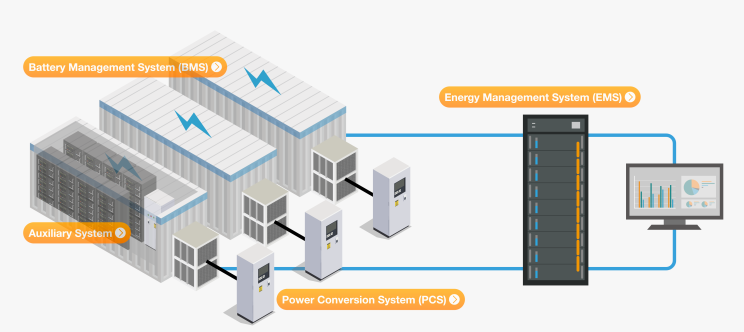
The EMS collects real-time data from all subsystems and interfaces with the grid dispatch center via secure communication channels (typically IEC 60870-5-104 or IEC 61850 protocols). It translates top-level grid commands — including AGC and AVC instructions — into specific charging and discharging commands issued to each PCS unit. This hierarchical loop of "perception → decision → execution" forms the backbone of BESS grid services.
EMS System Composition
An EMS system is generally composed of four layers: device layer, communication layer, information layer, and application layer.
Equipment layer: requires energy harvesting and conversion (PCS, BMS) as support; the equipment layer mainly includes energy storage battery cabinets, energy storage battery management system (BMS), energy storage converter (PCS), auxiliary control system (air conditioning, fire protection, temperature and humidity metering), smart meters, etc.
Communication layer: mainly includes links, protocols, transmission, etc.; EMS communicates with the device layer mainly through RJ45 and RS485 bus connections. The main communication protocols include Modbus, IEC104, IEC61850, etc.
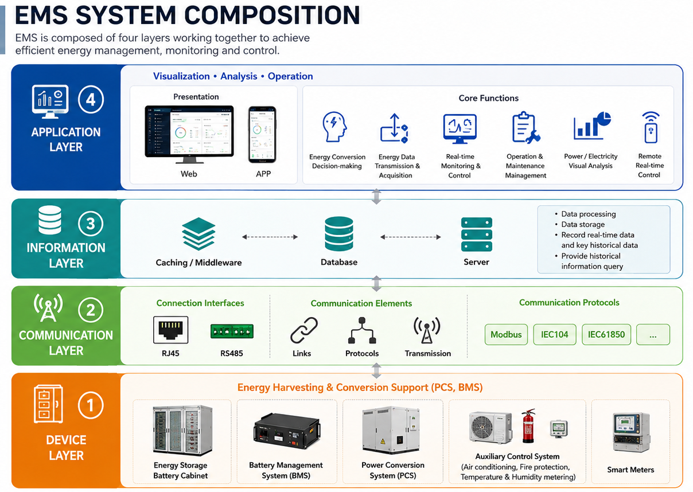
Information layer: mainly includes caching middleware, database, and server. The database system is responsible for data processing and data storage, recording real-time data and important historical data, and providing historical information query.
Application Layer: The presentation forms include APP, Web, etc., providing managers with a visual monitoring and operation interface. Specific functions include energy conversion decision-making, energy data transmission and acquisition, real-time monitoring and control, operation and maintenance management analysis, power/electricity visual analysis, remote real-time control, etc.
AGC — Automatic Generation Control
What is AGC?
Automatic Generation Control (AGC) is a centralized, automated control technology designed to maintain grid frequency stability by continuously balancing active power supply and demand across the power system. The grid operates at a nominal frequency — 50 Hz in India — and any imbalance between generation and consumption causes this frequency to deviate. AGC corrects these deviations in real time.
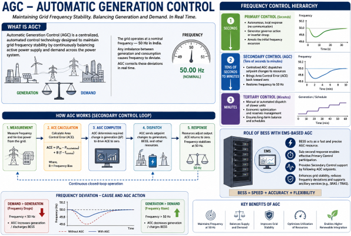
In the traditional power system hierarchy, frequency control operates at three levels:
- Primary Control (seconds): Autonomous, local response from governor action or inverter droop, arresting the initial frequency excursion.
- Secondary Control (tens of seconds to minutes): Centralized AGC dispatches setpoint changes to resources, bringing the Area Control Error (ACE) back toward zero.
- Tertiary Control (minutes): Manual or automated dispatch of slower units for economic optimization.
BESS with EMS-based AGC primarily operates as a secondary control resource, though its sub-second power electronics response also enables effective primary control participation.
The Area Control Error (ACE)
The key error signal driving AGC is the Area Control Error (ACE), which combines two components: the deviation of actual net power interchange from its scheduled value (tie-line error) and a frequency bias term proportional to the frequency deviation. A positive ACE indicates over-generation or excess exports — the AGC instructs generation reduction. A negative ACE signals under-generation — the AGC calls for increased output.
In a BESS context, the EMS receives the ACE-derived setpoint command from the National/State/Regional Load Dispatch Center (NLDC/SLDC/RLDC) and translates it into charge or discharge commands for the PCS fleet, effectively making the BESS act as a fast, controllable generation resource.
How AGC Works in a BESS
The AGC control loop within a BESS EMS operates as follows:
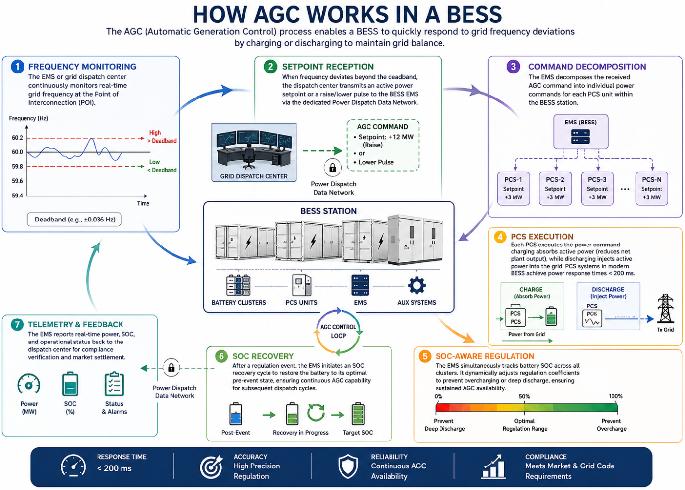
- Frequency Monitoring: The EMS or the grid dispatch center continuously monitors real-time grid frequency at the Point of Interconnection (POI).
- Setpoint Reception: When frequency deviates beyond the deadband, the dispatch center transmits an active power setpoint or a raise/lower pulse to the BESS EMS via the dedicated Power Dispatch Data Network.
- Command Decomposition: The EMS decomposes the received AGC command into individual power commands for each PCS unit within the BESS station.
- PCS Execution: Each PCS executes the power command — charging absorbs active power (reduces net plant output), while discharging injects active power into the grid. PCS systems in modern BESS achieve power response times under 200 milliseconds.
- SOC-Aware Regulation: The EMS simultaneously tracks battery SOC across all clusters. It dynamically adjusts regulation coefficients to prevent overcharging or deep discharge, ensuring sustained AGC availability.
- SOC Recovery: After a regulation event, the EMS initiates an SOC recovery cycle to restore the battery to its optimal pre-event state, ensuring continuous AGC capability for subsequent dispatch cycles.
- Telemetry and Feedback: The EMS reports real-time power, SOC, and operational status back to the dispatch center for compliance verification and market settlement.
AGC Operating Modes in BESS EMS
The EMS typically supports multiple AGC sub-modes:
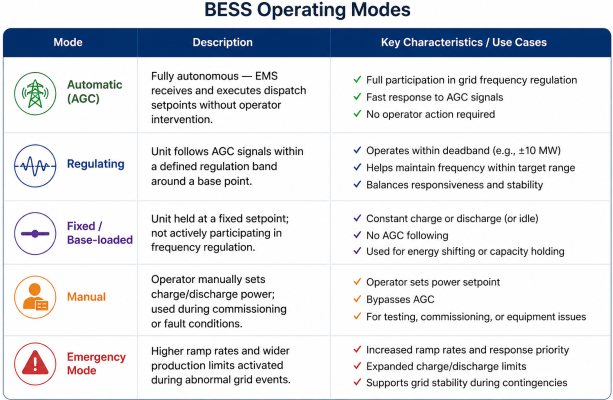
Key AGC Performance Benchmarks
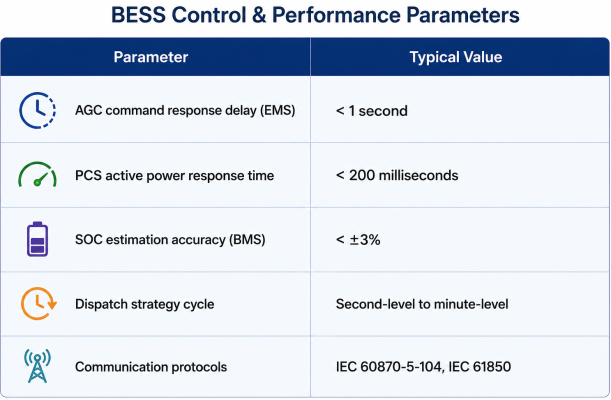
AGC and SOC Management
A critical challenge unique to BESS in AGC service is State of Charge (SOC) management. Unlike a thermal generator with unlimited fuel supply, a BESS has finite energy capacity. The EMS must ensure the battery operates within safe SOC limits (typically 20%–90%) throughout the regulation cycle.
The EMS achieves this through SOC hysteresis control and adaptive droop coefficients — when the SOC is low, regulation coefficients for discharge commands are reduced to protect the battery; when SOC is high, charging commands are moderated. Some advanced EMS platforms use virtual inertia control (response proportional to Rate of Change of Frequency — RoCoF) and virtual droop control (response proportional to frequency deviation) as complementary strategies to balance regulation precision with battery longevity.
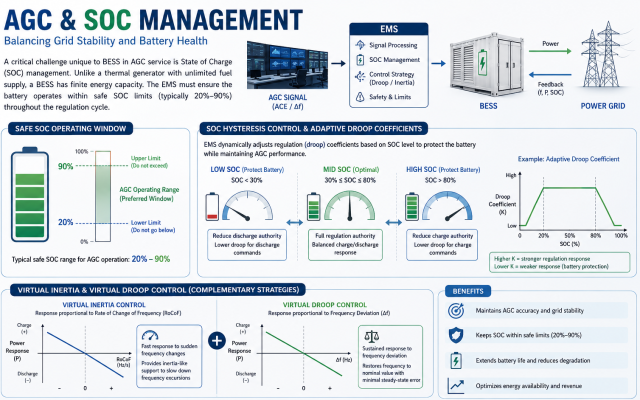
AVC — Automatic Voltage Control
What is AVC?
Automatic Voltage Control (AVC) is the counterpart to AGC — while AGC governs active power and frequency, AVC governs reactive power and grid voltage. The objective of AVC is to maintain bus voltages across the power system within safe and specified limits (typically ±5% of nominal) by controlling reactive power injection or absorption.
In interconnected grids, voltage stability is closely linked to reactive power balance. Reactive power cannot be transmitted efficiently over long distances; it must be generated or absorbed locally. BESS, with their bidirectional power electronics (PCS), can generate or consume reactive power independently of active power — making them uniquely valuable for AVC services.
How AVC Works in a BESS
The AVC control loop within the BESS EMS functions as follows:
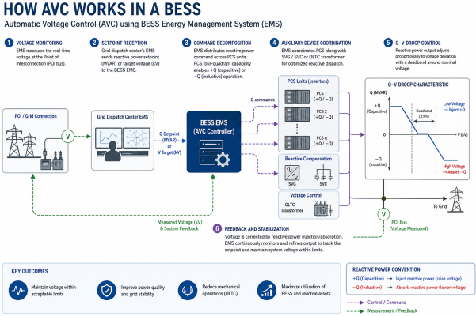
- Voltage Monitoring: The EMS directly measures voltage at the grid connection point (POI bus) in real time.
- Setpoint Reception: The grid dispatch center's EMS calculates total reactive power adjustments or voltage targets needed for system voltage stability and transmits a reactive power setpoint (MVAR) or a target voltage (kV) to the BESS EMS.
- Command Decomposition: The EMS distributes the reactive power command across PCS units, leveraging their four-quadrant inverter capability — generating reactive power (capacitive, +Q) to support low voltage, or absorbing reactive power (inductive, −Q) to suppress overvoltage.
- Auxiliary Device Coordination: If the BESS plant includes dedicated reactive compensation devices (SVG — Static Var Generator, or SVC — Static Var Compensator) or on-load tap-changing (OLTC) transformers, the EMS coordinates these alongside PCS for optimized reactive dispatch.
- Q-V Droop Control: Many EMS platforms implement a Q-V characteristic curve (droop control) — reactive power output adjusts proportionally to voltage deviation, with a deadband around the nominal voltage to prevent unnecessary switching.
- Feedback and Stabilization: The adjusted reactive power injection or absorption corrects the voltage deviation, and the EMS continuously refines its output to track the dispatch setpoint.
Q-V Characteristic in AVC
The Q-V droop curve is the mathematical foundation of AVC response. It defines reactive power output (Q) as a function of measured voltage (V) at the POI:
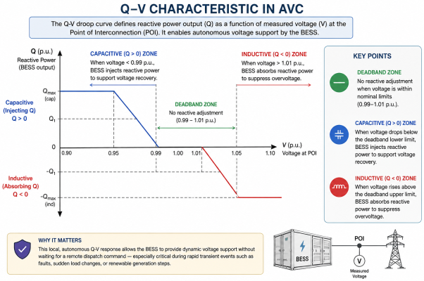
- Deadband zone: No reactive adjustment when voltage is within nominal limits (e.g., 0.99–1.01 p.u.)
- Capacitive (Q > 0) zone: When voltage drops below deadband lower limit, the BESS injects reactive power to support voltage recovery
- Inductive (Q < 0) zone: When voltage rises above deadband upper limit, the BESS absorbs reactive power to suppress the overvoltage
This local, autonomous Q-V response allows the BESS to provide dynamic voltage support without waiting for a remote dispatch command — especially critical during rapid transient events such as faults, sudden load changes, or renewable generation steps.
Key AVC Performance Benchmarks
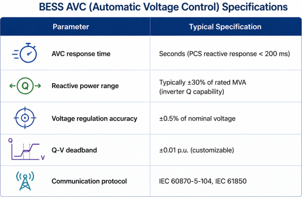
AGC vs. AVC: Core Differences
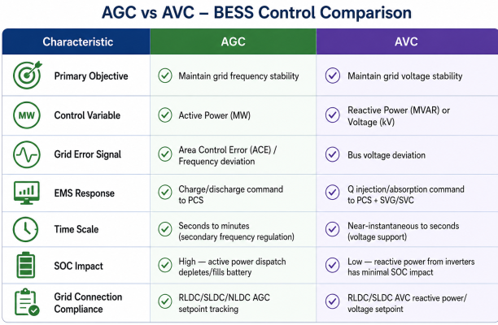
Despite their differences, AGC and AVC are not independent — they work in tandem. Significant active power fluctuations (AGC events) can affect local voltage, requiring a simultaneous AVC response. Conversely, excessive reactive power draw from the inverter can slightly constrain available active power capacity due to inverter MVA limits. A well-designed BESS EMS coordinates both control loops to ensure neither compromises the other.
Communication Architecture: How Dispatch Reaches the BESS EMS
The reliability of AGC and AVC depends entirely on the communication infrastructure linking the grid dispatch center to the BESS EMS. The architecture typically includes:
- Remote Control Unit (RCU): Configured in dual-unit redundancy, it handles all communication between the energy storage power station and the power grid dispatch center. It uses the IEC 60870-5-104 protocol for power communication.
- Vertical Encryption Device: Ensures cybersecurity compliance for communication over the dispatch data network, meeting large grid encryption requirements.
- Dual-Network Redundant Communication: The EMS and the telecontrol equipment use dual-network redundancy (primary + backup) to guarantee communication reliability — a critical requirement for AGC/AVC services where a communication failure would cause loss of grid support.
- SCADA Integration: The EMS's SCADA module provides real-time data acquisition from all station subsystems and transmits key operational parameters (SOC, power, voltage, current, alarms) to the dispatch center.
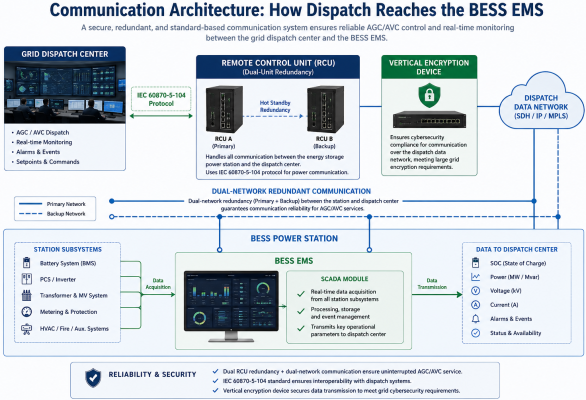
AGC and AVC in the Indian BESS Context
India's evolving grid code and regulatory framework increasingly mandate AGC and AVC compliance for large BESS installations:
- CERC Ancillary Services Regulations (2022): Energy storage systems are eligible to provide Secondary Reserve Ancillary Services (SRAS) and Tertiary Reserve Ancillary Services (TRAS), which are directly linked to AGC dispatch.
- AGC for Renewable Balancing: The Government of India has deployed AGC for balancing supply and demand to manage variability of renewable energy. Grid India has also proposed mandatory AGC capability for all new renewable energy and BESS projects.
- CEA Technical Standards (Amendment 2023): Renewable energy and BESS projects must demonstrate compliance with grid code requirements at the Point of Interconnection (POI), including reactive power capability across a 0.95–1.05 p.u. voltage range — a direct AVC requirement.
- BESS Scale-Up: CEA has estimated a requirement of 336 GWh of energy storage by 2029–30 and 411 GWh by 2031–32. At this scale, the AGC and AVC capabilities of BESS EMS will be indispensable for frequency and voltage security across the Indian grid.
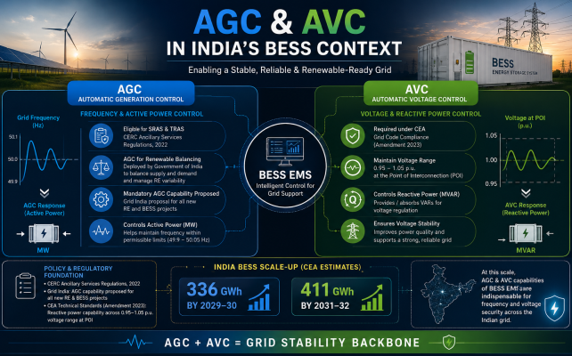
Advanced EMS Features Enhancing AGC and AVC
Modern BESS EMS platforms are incorporating intelligent features that take AGC and AVC performance beyond conventional reactive control:
- AI-Based Predictive Dispatch: Machine learning models predict frequency excursions and voltage events before they occur, allowing the BESS to pre-position its SOC and reactive power margin for faster, more effective response.
- Multi-Objective Coordinated Control: The EMS simultaneously manages AGC, AVC, primary frequency regulation, peak shaving, and reserve services — allocating resources across these competing demands in real time.
- Adaptive SOC-Based Regulation Coefficients: AGC participation factors are dynamically adjusted based on real-time SOC, preventing battery degradation during sustained regulation events.
- Virtual Power Plant (VPP) Integration: Advanced EMS platforms support VPP aggregation modules, enabling multiple distributed BESS assets to participate as a unified AGC/AVC resource in the ancillary services market.
Conclusion
AGC and AVC are the most advanced and grid-critical functions of the BESS EMS. Together, they transform a battery bank into a dispatchable, grid-supporting power plant capable of maintaining both frequency and voltage stability in real time. AGC addresses active power balance and frequency regulation — responding within seconds to Area Control Error signals from the dispatch center. AVC addresses reactive power balance and voltage regulation — adjusting reactive output to maintain safe voltage levels at the POI.
As India's renewable energy capacity expands and the grid increasingly depends on BESS for ancillary services, mastering the AGC and AVC capabilities of the EMS is no longer optional — it is a fundamental prerequisite for grid code compliance, market participation, and long-term revenue generation from energy storage assets. The performance of these two functions, underpinned by robust communication architecture, intelligent SOC management, and coordinated multi-mode control, will define the quality and value of every grid-scale BESS installation in the years ahead.